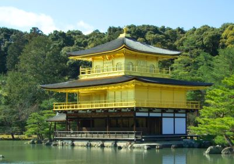
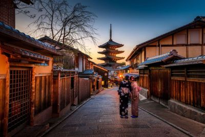
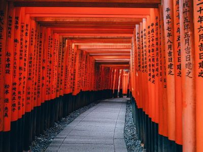

Explora la Belleza Histórica de Kyoto
¡Te invitamos a descubrir la rica historia y la belleza cultural de Kyoto, la antigua capital de Japón y hogar de innumerables templos, santuarios y jardines tradicionales! En Travel Partners Agency, nos complace ofrecerte una experiencia inolvidable para explorar esta ciudad llena de encanto y misterio.
Atractivos Turísticos
-

Templo Kinkaku-ji (Pabellón Dorado)
Maravíllate con la espectacular belleza del Templo Kinkaku-ji, un impresionante pabellón cubierto de pan de oro situado junto a un estanque sereno y rodeado de exuberantes jardines paisajísticos.
-

Barrio de Gion
Sumérgete en la atmósfera mágica del histórico barrio de Gion, conocido por sus calles empedradas, casas de té tradicionales y la posibilidad de ver a las geishas y maikos vestidas con sus exquisitos kimonos.
-

Fushimi Inari Taisha
Explora el impresionante santuario de Fushimi Inari Taisha, famoso por sus miles de torii vermillones que forman túneles a lo largo de los senderos que serpentean por la montaña Inari. Es una experiencia única y mística en Kyoto.
Itinerario de 5 días y 4 noches
-
Día 1: Llegada a Kyoto
-
1. Llegada a la estación de tren de Kyoto o al aeropuerto de Kansai y traslado al hotel.
-
2. Tarde libre para descansar o explorar los alrededores del hotel.
-
-
Día 2: Templos y Jardines de Kyoto
-
1. Mañana dedicada a visitar el Templo Kinkaku-ji y el Templo Ryoan-ji, famoso por su jardín de rocas zen.
-
2. Tarde en el Jardín de Piedra del Templo Koto-in, donde podrás disfrutar de la tranquilidad y la belleza de un jardín japonés tradicional.
-
-
Día 3: Barrio de Gion y Santuario Yasaka
-
1. Mañana de exploración por el encantador Barrio de Gion, con la posibilidad de ver a las geishas y maikos paseando por las calles.
-
2. Visita al Santuario Yasaka, uno de los santuarios más importantes de Kyoto, conocido por sus festivales tradicionales y su impresionante arquitectura.
-
-
Día 4: Excursión a Fushimi Inari Taisha
-
1. Excursión de medio día al Santuario Fushimi Inari Taisha para explorar sus senderos y torii vermillones.
-
2. Tarde libre para compras de recuerdos en la calle comercial cercana o para disfrutar de la gastronomía local.
-
-
Día 5: Despedida de Kyoto
-
1. Mañana libre para actividades opcionales o compras de último momento.
-
2. Traslado a la estación de tren o al aeropuerto para el vuelo de regreso.
-
Costos del Viaje
El costo del viaje puede variar dependiendo de las preferencias individuales y las opciones de alojamiento seleccionadas. Nuestro paquete básico de 5 días y 4 noches incluye:
-
1. Traslados desde y hacia la estación de tren o el aeropuerto.
-
2. Alojamiento en hoteles de calidad en el centro de Kyoto.
-
3. Excursiones mencionadas en el itinerario.
-
4. Guías locales expertos.
Para obtener un presupuesto personalizado y más detalles sobre opciones de alojamiento, actividades adicionales y servicios complementarios, no dudes en contactarnos. Estamos aquí para hacer de tu viaje a Kyoto una experiencia inolvidable. ¡Reserva tu aventura hoy con Travel Partners Agency!